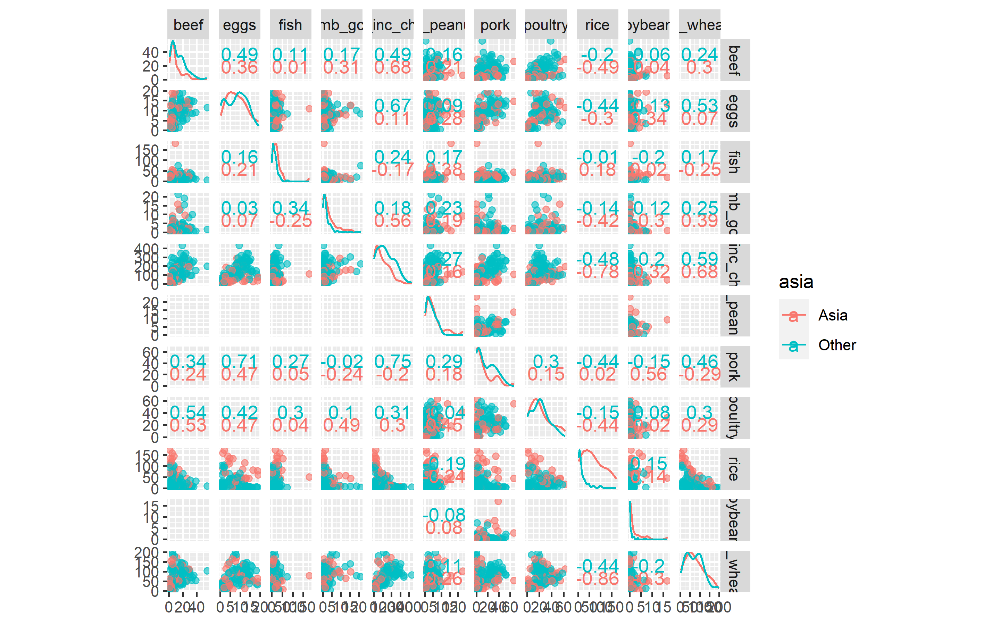
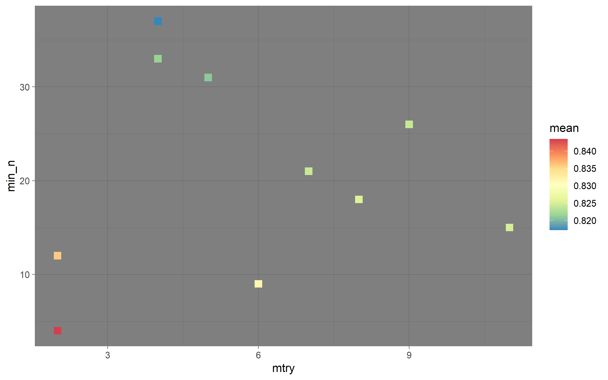

Get data, take a look.
| country | food_category | consumption | co2_emmission |
|---|---|---|---|
| Argentina | Pork | 10.51 | 37.20 |
| Argentina | Poultry | 38.66 | 41.53 |
| Argentina | Beef | 55.48 | 1712.00 |
| Argentina | Lamb & Goat | 1.56 | 54.63 |
| Argentina | Fish | 4.36 | 6.96 |
| Argentina | Eggs | 11.39 | 10.46 |
Here, we’re prepping the data. We use a function from the country code package that takes a country and matches it with the continent, all while creating a new variable called continent. Really awesome package that can take country names, codes and many more. In fact. Let me look. Yeah, tons of codes to use.
Okay, so we line up country with continent, the we remove co2 emissions, and this next part is pretty great as well. Essentially, we’ve got a tall tbl at first, but pivot wider takes all the food_category names that are originally in one column and places them in rows with their associated consumption values.
Next we clean the names. And then we create a binary indicator variable for when a country is in canada. Again we do this by creating a new variable with mutate and then use the amazing function case_when().
Remove country, remove continent, now that we have asia or not asia and finally wrap up by changing our columns / predictors that are characters into factors.
How clean! How easy!
This function gives us a scatter plot map of all our variables. This is effective here becuase we have all continuous variables. From the GGally package.

Create 30 random w/replacement samples. Get our model set up. Setting mtry to tune and min_n to tune. Then tune grid our model spec.
Get metrics and plot.

## # A tibble: 5 x 8
## mtry min_n .metric .estimator mean n std_err .config
## <int> <int> <chr> <chr> <dbl> <int> <dbl> <chr>
## 1 2 4 roc_auc binary 0.843 30 0.00893 Preprocessor1_Model06
## 2 2 12 roc_auc binary 0.836 30 0.00926 Preprocessor1_Model07
## 3 6 9 roc_auc binary 0.832 30 0.00935 Preprocessor1_Model05
## 4 8 18 roc_auc binary 0.825 30 0.0101 Preprocessor1_Model09
## 5 11 15 roc_auc binary 0.825 30 0.0105 Preprocessor1_Model01Thank you, Julia Silge! Find more of her work here
-Carson Poe